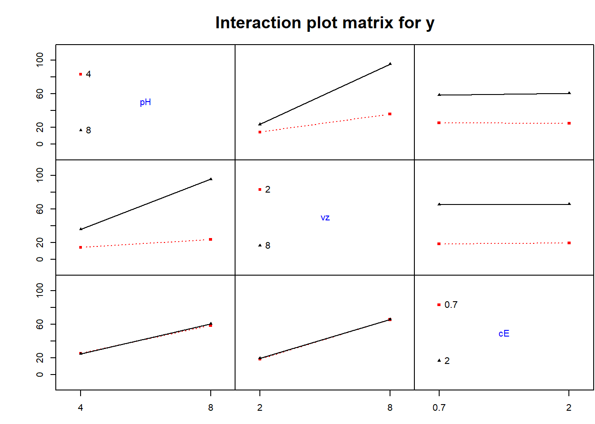
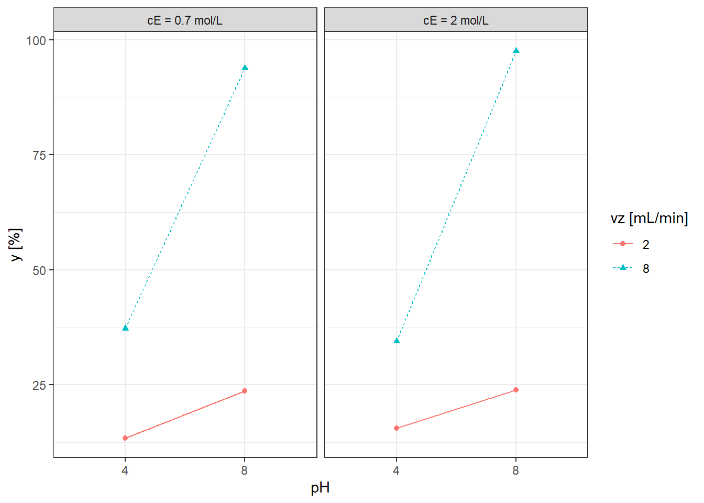

library(FrF2)
library(olsrr)
library(ggplot2)
library(ggpubr)
library(dplyr)Fatorial 2^k: Exemplo fatorial 2^3
Carregando pacotes
Planejamento
Exemplo Fatorial 2^3 para determinação de cobre em diferentes amostras de água por espectrometria de emissão óptica.
x1: pH
x2: vazao - vz (mL/min)
x3: Concentracao de Eluente - cE (mol/L)
y: sinal analítico resultante das medições de altura de pico instrumental. Uma vez obtidos esses valores, o maior foi considerado como 100 (Experimento 8) e os demais como porcentagem deste máximo (sinal analítico relativo).
Artigo disponível em: https://doi.org/10.1016/j.jhazmat.2010.07.014
Definindo o planejamento.
plan <- FrF2(nruns = 8,
nfactors = 3,
replications = 2,
factor.names = list(pH = c(4,8), # -
vz = c(2,8), # mL/min
cE = c(0.7,2)), # mol/L
randomize = F)
summary(plan)Call:
FrF2(nruns = 8, nfactors = 3, replications = 2, factor.names = list(pH = c(4,
8), vz = c(2, 8), cE = c(0.7, 2)), randomize = F)
Experimental design of type full factorial
8 runs
each run independently conducted 2 times
Factor settings:
pH vz cE
1 4 2 0.7
2 8 8 2
The design itself:
run.no run.no.std.rp pH vz cE Blocks
1 1 1.1 4 2 0.7 .1
2 2 2.1 8 2 0.7 .1
3 3 3.1 4 8 0.7 .1
4 4 4.1 8 8 0.7 .1
5 5 5.1 4 2 2 .1
6 6 6.1 8 2 2 .1
7 7 7.1 4 8 2 .1
8 8 8.1 8 8 2 .1
9 9 1.2 4 2 0.7 .2
10 10 2.2 8 2 0.7 .2
11 11 3.2 4 8 0.7 .2
12 12 4.2 8 8 0.7 .2
13 13 5.2 4 2 2 .2
14 14 6.2 8 2 2 .2
15 15 7.2 4 8 2 .2
16 16 8.2 8 8 2 .2
class=design, type= full factorial
NOTE: columns run.no and run.no.std.rp are annotation,
not part of the data frameAdicionando a resposta.
y <- c(13.66, 23.60, 39.13, 95.65, 17.39, 22.36, 35.40,
100.00, 13.04, 23.60, 35.40, 91.93, 13.66, 25.47,
33.54, 95.03)
plan$y <- yAnálise
Modelo de regressão, teste t e ANOVA.
lm1 <- lm(y ~ pH*vz*cE, data = plan) # modelo completo
summary(lm1)
Call:
lm.default(formula = y ~ pH * vz * cE, data = plan)
Residuals:
Min 1Q Median 3Q Max
-2.485 -1.631 0.000 1.631 2.485
Coefficients:
Estimate Std. Error t value Pr(>|t|)
(Intercept) 42.4288 0.5586 75.955 1.01e-12 ***
pH1 17.2763 0.5586 30.928 1.30e-09 ***
vz1 23.3312 0.5586 41.767 1.19e-10 ***
cE1 0.4275 0.5586 0.765 0.4661
pH1:vz1 12.6163 0.5586 22.585 1.56e-08 ***
pH1:cE1 0.5825 0.5586 1.043 0.3275
vz1:cE1 -0.1950 0.5586 -0.349 0.7360
pH1:vz1:cE1 1.0475 0.5586 1.875 0.0976 .
---
Signif. codes: 0 '***' 0.001 '**' 0.01 '*' 0.05 '.' 0.1 ' ' 1
Residual standard error: 2.234 on 8 degrees of freedom
Multiple R-squared: 0.9975, Adjusted R-squared: 0.9953
F-statistic: 459.5 on 7 and 8 DF, p-value: 8.846e-10anova1 <- aov(lm1)
summary(anova1) Df Sum Sq Mean Sq F value Pr(>F)
pH 1 4776 4776 956.521 1.30e-09 ***
vz 1 8710 8710 1744.502 1.19e-10 ***
cE 1 3 3 0.586 0.4661
pH:vz 1 2547 2547 510.101 1.56e-08 ***
pH:cE 1 5 5 1.087 0.3275
vz:cE 1 1 1 0.122 0.7360
pH:vz:cE 1 18 18 3.516 0.0976 .
Residuals 8 40 5
---
Signif. codes: 0 '***' 0.001 '**' 0.01 '*' 0.05 '.' 0.1 ' ' 1Intervalo de confiança para os coeficientes.
confint(lm1) 2.5 % 97.5 %
(Intercept) 41.140612 43.716888
pH1 15.988112 18.564388
vz1 22.043112 24.619388
cE1 -0.860638 1.715638
pH1:vz1 11.328112 13.904388
pH1:cE1 -0.705638 1.870638
vz1:cE1 -1.483138 1.093138
pH1:vz1:cE1 -0.240638 2.335638Pressuposições
Normalidade.
shapiro.test(lm1$residuals)
Shapiro-Wilk normality test
data: lm1$residuals
W = 0.9241, p-value = 0.1963par(mfrow = c(2,2))
plot(lm1)par(mfrow = c(1,1))Homocedasticidade.
ols_test_breusch_pagan(lm1, rhs = T, multiple = T)
Breusch Pagan Test for Heteroskedasticity
-----------------------------------------
Ho: the variance is constant
Ha: the variance is not constant
Data
----------------------------------------------------------
Response : y
Variables: pH1 vz1 cE1 pH1:vz1 pH1:cE1 vz1:cE1 pH1:vz1:cE1
Test Summary (Unadjusted p values)
----------------------------------------------
Variable chi2 df p
----------------------------------------------
pH1 0.3430488 1 0.5580747
vz1 1.2791925 1 0.2580492
cE1 0.6988524 1 0.4031696
pH1:vz1 0.8340092 1 0.3611158
pH1:cE1 0.3821725 1 0.5364428
vz1:cE1 0.6512426 1 0.4196688
pH1:vz1:cE1 0.7944072 1 0.3727708
----------------------------------------------
simultaneous 4.9829253 7 0.6620470
----------------------------------------------Gráficos
Via FrF2.
MEPlot(lm1)IAPlot(lm1)
cubePlot(lm1,
eff1 = "pH",
eff2 = "vz",
eff3 = "cE", main = "")Gráfico de efeito principal para pH.
p1 <- ggplot(plan, aes(x = pH,
y = y,
group = 1)) +
stat_summary(fun.data = "mean_se",
geom = "errorbar",
color = "blue",
width = 0.1) +
stat_summary(fun = mean,
geom = "line",
color = "blue") +
stat_summary(fun = mean,
geom = "point",
color = "blue") +
geom_jitter(color = "blue",
width = 0.1) +
theme_bw()Gráfico de efeito principal para vz.
p2 <- ggplot(plan, aes(x = vz, y = y,
group = 1)) +
stat_summary(fun.data = "mean_se",
geom = "errorbar",
color = "green3",
width = 0.1) +
stat_summary(fun = mean,
geom = "point",
color = "green3") +
stat_summary(fun = mean,
geom = "line",
color = "green3") +
geom_jitter(color = "green3",
width = 0.1) +
theme_bw()Gráfico de efeito principal para cE.
p3 <- ggplot(plan, aes(x = cE,
y = y,
group = 1)) +
stat_summary(fun.data = "mean_se",
geom = "errorbar",
color = "red",
width = 0.1) +
stat_summary(fun = mean,
geom = "point",
color = "red") +
stat_summary(fun = mean,
geom = "line",
color = "red") +
geom_jitter(color = "red",
width = 0.1) +
theme_bw()ggarrange(p1,p2,p3,nrow=1)Gráfico de interação entre pH e vz.
p12 <- ggplot(plan, aes(x = pH,
y = y,
color = factor(vz),
pch = factor(vz),
lty = factor(vz),
group = factor(vz))) +
stat_summary(fun.data = "mean_se",
geom = "errorbar",
width = 0.1) +
stat_summary(fun = mean,
geom = "point") +
stat_summary(fun = mean,
geom = "line") +
geom_jitter(alpha=.5,width = 0.1) +
theme_bw() +
labs(color = "vz", pch = "vz", lty = "vz")
p12Gráfico de Pareto dos efeitos padronizados.
t_critico <- qt(0.025, df.residual(lm1), lower.tail = F)
MSE <- deviance(lm1)/df.residual(lm1)
#obs <- deviance = sum(lm2$residuals^2)
SE_coef <- sqrt(MSE/16) # erro padrao dos coeficientes
t0 <- lm1$coefficients/SE_coef # t0
t_0 <- data.frame(names(coef(lm1)),
abs(t0))
colnames(t_0) <- c("termo", "t0")
pPar <- ggplot(t_0[-1,],
aes(x = reorder(termo, abs(t0)),
y = abs(t0))) +
geom_bar(stat = "identity",
fill = "lightgreen",
color = "green4") +
geom_hline(yintercept = t_critico,
color = "red") +
coord_flip() +
theme_bw() +
labs(x = "Terms",
y = "|t-value|")
pParOutra forma de fazer os gráficos.
means_pH <- plan %>%
group_by(pH) %>%
summarise(y = mean(y))
means_vz <- plan %>%
group_by(vz) %>%
summarise(y = mean(y))
means_cE <- plan %>%
group_by(cE) %>%
summarise(y = mean(y))
y_min <- min(c(means_pH$y, means_vz$y, means_cE$y))
y_max <- max(c(means_pH$y, means_vz$y, means_cE$y))
p1 <- ggplot(means_pH, aes(x = pH, y = y,
group=1)) +
geom_point(color = "blue", size = 2) +
geom_line(color = "blue") +
theme_bw() +
ylim(y_min, y_max) # Escala do eixo y baseada nas médias
p2 <- ggplot(means_vz, aes(x = vz, y = y,
group=1)) +
geom_point(color = "green3", size = 2) +
geom_line(color = "green3") +
theme_bw() +
ylim(y_min, y_max) # Escala do eixo y baseada nas médias
p3 <- ggplot(means_cE, aes(x = cE, y = y,
group=1)) +
geom_point(color = "red", size = 2) +
geom_line(color = "red") +
theme_bw() +
ylim(y_min, y_max) # Escala do eixo y baseada nas médias
ggarrange(p1,p2,p3, nrow=1)plan_pH_vz <- plan |>
group_by(pH,vz) |>
summarise(y = mean(y))
p12 <- ggplot(plan_pH_vz,
aes(x = pH,
y = y, group = factor(vz),
color = factor(vz),
lty = factor(vz),
pch = factor(vz))) +
geom_point() +
geom_line() +
theme_bw() +
labs(color = "vz", lty = "vz", pch = "vz")
ggarrange(p12,pPar, nrow=1)Gráfico de interação entre as três variáveis, pH, vz e cE.
plan_pH_vz_cE <- plan |>
group_by(pH,vz,cE) |>
summarise(y = mean(y))
cE.labs <- c("cE = 0.7 mol/L", "cE = 2 mol/L")
names(cE.labs) <- c("0.7", "2")
p123 <- ggplot(plan_pH_vz_cE,
aes(x = pH,
y = y, group = factor(vz),
color = factor(vz),
linetype = factor(vz),
pch = factor(vz))) +
geom_point() +
geom_line() +
facet_wrap(vars(cE),
labeller = labeller(cE=cE.labs)) +
theme_bw() +
labs(x = "pH",
y="y [%]",
color = "vz [mL/min]",
linetype = "vz [mL/min]",
pch = "vz [mL/min]")
p123
Gráficos de contorno.
plan2 <- expand.grid(c(4,8),
c(2,8),
c(0.7,2))
plan2 <- rbind(plan2,plan2)
colnames(plan2) <- c("pH", "vz", "cE")
plan2$y <- y
lm3 <- lm(y ~ pH*vz*cE, plan2)
grid1 <- expand.grid(pH = seq(4,8, length = 40),
vz = seq(2,8, length = 40),
cE = 1.35) # Mantendo cE fixo
y_hat1 <- predict(lm3, newdata = grid1)
grid1$y <- y_hat1
grid2 <- expand.grid(pH = seq(4,8, length = 40),
vz = 5, # Mantendo vz fixo
cE = seq(0.7, 2, length = 40))
y_hat2 <- predict(lm3, newdata = grid2)
grid2$y <- y_hat2
grid3 <- expand.grid(pH = 6, # Mantendo pH fixo
vz = seq(2,8, length = 40),
cE = seq(0.7, 2, length = 40))
y_hat3 <- predict(lm3, newdata = grid3)
grid3$y <- y_hat3
common_limits <- range(c(grid1$y, grid2$y, grid3$y))
cp1 <- ggplot(data = grid1, aes(x = pH, y = vz, z = y,
fill = y)) +
geom_tile() +
scale_fill_distiller(palette = "Spectral", direction = -1,
limits = common_limits) +
geom_contour(color = "gray50") +
theme_bw()
cp2 <- ggplot(data = grid2, aes(x = pH, y = cE, z = y,
fill = y)) +
geom_tile() +
scale_fill_distiller(palette = "Spectral", direction = -1,
limits = common_limits) +
geom_contour(color = "gray50") +
theme_bw()
cp3 <- ggplot(data = grid3, aes(x = vz, y = cE, z = y,
fill = y)) +
geom_tile() +
scale_fill_distiller(palette = "Spectral", direction = -1, limits = common_limits) +
geom_contour(color = "gray50") +
theme_bw()
ggarrange(cp1, cp2, cp3, nrow=1)Previsão
predict(lm3, newdata = data.frame(pH = 6,
vz = 5,
cE = 1)) 1
42.19856 lm3$fitted.values 1 2 3 4 5 6 7 8 9 10 11
13.350 23.600 37.265 93.790 15.525 23.915 34.470 97.515 13.350 23.600 37.265
12 13 14 15 16
93.790 15.525 23.915 34.470 97.515